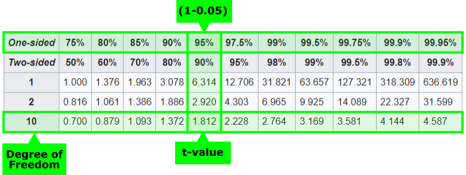

T-Test
Introduction to T-Tests
The t-test is a fundamental statistical method widely used in various fields to compare the means of two groups and determine if they are statistically different from each other. At its core, the t-test evaluates whether the difference between the means of two groups is significant or if it could have occurred by chance due to variability in the data. This is crucial when testing hypotheses in research studies.
Example: Math Score
Suppose you're investigating whether a new tutoring program improves students' math test scores compared to a standard curriculum. Here, the two groups are:
- Group A: Students using the new tutoring program.
- Group B: Students following the standard curriculum.
Your alternative hypothesis is that the mean test score of Group A is different from that of Group B. The null hypothesis states that there is no difference in the mean test scores between the two groups.
The t-test formula provides a standardized way to measure the difference between group means relative to the variability in the data:
Definition: T-Test
Where:
- \(\bar{x}\) = average of group x
- \(\bar{y}\) = average of group y
- \(s\) = standard error of the arithmetic mean = \(\sigma\sqrt{n}\)
- \(n\) = number of samples
- \(k\) = degree of freedom
This formula essentially calculates how many standard deviations the difference between the two means is away from zero. A larger absolute value of \(t\) indicates a more significant difference between the groups. The degree of freedom is equal to the sample size minus 1:
T-Distribution
In the following graph you see the probability of a certain t-value occurring given that the null hypothesis is true. This curve is called the t-distribution (or sometimes Student's t-distribution).
Code
import numpy as np
import pandas as pd
import plotly.express as px
from scipy.stats import norm
# Generate the data for the normal distribution
x = np.linspace(-4, 4, 1000)
y = norm.pdf(x, 0, 1)
# Create DataFrame for Plotly
df = pd.DataFrame({'x': x, 'y': y})
# Create the plot
fig = px.line(df, x='x', y='y')
# Adjust the plot
fig.data[0].update(line=dict(color='#00416E', width=2))
# Add layout modifications
fig.update_layout(
xaxis_title_text='t-Value',
yaxis_title_text='P(t|H0)',
title=dict(
text=f'<b><span style="font-size: 10pt">t-Distribution</span></b>',
),
showlegend=False,
)
# Show the plot
fig.show()
If the null hypothesis is true, we expect the difference between the means to be zero \(\bar{x} - \bar{y} = 0\), resulting in a t-value of zero. This corresponds to the highest probability and the peak of the distribution. However, due to sampling variability and noise, the means will not be exactly equal (even if the null hypothesis is true), leading to t-values around zero and therefore to the t-distribution.
In Python we can use the scipy.stats package to work easily with the t-distribution
stats.t which can be very helpful.
stats.t.pdf(1.5, df=10) # probability density function
stats.t.cdf(1.5, df=10) # cumulative distribution function
Dependency on the Degree of Freedom
The t-distribution depends on the degree of freedom.
The higher the DoF, the more the curve converge to a standard normal distribution. Because the DoF depends on the sample size n, the following rule of thumb can be stated: for a sample size >30 the standard normal distribution can be used for calculating the p-value.
Code
# Import necessary libraries
import numpy as np
import pandas as pd
import plotly.express as px
import scipy.stats as stats
# Define the x-axis values (t-values)
x = np.arange(-5, 5.01, 0.01)
# Define the degrees of freedom you want to plot, including 'infinity' for Normal distribution
degrees_of_freedom = [1, 3, 5, 30, np.inf] # np.inf represents infinite degrees of freedom (Normal distribution)
# Create an empty DataFrame to store the data for all curves
df_all = pd.DataFrame()
# Loop through each degree of freedom and compute the t-distribution
for df in degrees_of_freedom:
if df == np.inf:
y = stats.norm.pdf(x) # Normal distribution for df = infinity
df_label = 'df= (Normal)'
else:
y = stats.t.pdf(x, df=df)
df_label = f'df={df}'
df_temp = pd.DataFrame({'x': x, 'y': y, 'df': df_label})
df_all = pd.concat([df_all, df_temp])
# Create the plot using Plotly Express
fig = px.line(df_all, x='x', y='y', color='df',
title="<b>t-Distribution for Different Degrees of Freedom</b>",
labels={'x': 't-Value', 'y': 'P(t|H0)', 'df': 'Degrees of Freedom'})
# Update layout
fig.update_layout(
title=dict(
text=f'<b><span style="font-size: 10pt">t-Distribution for Different Degrees of Freedom</span></b>',
),
xaxis_title_text='t-Value',
yaxis_title_text='P(t|H0)',
showlegend=True,
)
# Show the plot
fig.show()
T-Table
As described in the previous chapter, the p-value represents the cumulative probability of obtaining a certain t-value or more extreme values.
One-Tailed Test
Two-Tailed Test
Graphically, the p-value is the area under the t-distribution starting from a given t-value. To fasten the evaluation of a t-test and avoid the need for constant calculations, precomputed values are available in what are known as t-tables.
There are a lot of sources for t-tables around the internet. One very neatly is available on Wikipedia.
The table basically consists of four areas:
- degree of freedom,
- significance level \(\alpha\)
- Information about one oder two sided test
- t-value
The structure of the table can be read as follows:
Using the t-table
At least three of the four pieces of information must therefore be available in order to use the table.
Task: t-table
Take a closer look at the above shown t-table and compare it to the two examples shown above. Can you see the connection?
Calculating the p-Value
The p-value helps determine the statistical significance of your results. It represents the probability of observing a t-value as extreme as the one calculated, assuming the null hypothesis is true.
There are two ways to use the p-value in the T-Test:
Calculate Critical t-Value
The first approach is to calculate the critical t-value. This value depends on the chosen significance level (\(\alpha\)), the degrees of freedom, and whether the test is one-tailed (e.g., alpha = 5% on one side) or two-tailed (alpha = 5%, meaning 2.5% on each side). Based on these factors, the critical t-values can be determined, for example by using the t-table shown above.
Next, the t-value of the sample can be calculated (using the before mentioned formula) and compared to the critical t-values in order to make a statement about the validity of the null hypothesis.
Example: Math Score
Let's stick with the example from before. Imagine you conduct the tutoring program study and calculate a t-value of \(2.5\). Because we are only interested in the fact that the grades get better, we can use a one-tailed test. Our significance level \(\alpha = 5\%\). The sample size was \(11\) and therefore the degree of freedom is \(10\).
We can determine the critical t-value using a t-table or by using python

Since the sampled t-value of 2.5 is extremer than the critical t-value of 1.8, the null hypothesis can be rejected and you conclude that the tutoring program has a statistically significant effect on test scores.

Calculate p-Value of the Sample
The second approach tackles the problem from the opposite side. In this case, we start with the sample's t-value and calculate the corresponding p-value. If the p-value is below the significance level alpha, we can reject the null hypothesis.
Example: Math Score
Now we use the second approach and start from the sample t-value. We calcualte the corresponding p-value
The calculated p-value (\(1.6\%\)) is lower than the significance level (\(\alpha = 5\%\)) and the null hypothesis can therefore be rejectet.
Strategies to Maximize the t-value
To increase the likelihood of detecting a true effect, consider the following approaches:
-
Increase the Difference Between Means (\(\bar{x} - \bar{y}\)):
- Action: Enhance the impact of the treatment or condition.
- Example: If testing a new drug, use a dosage that is expected to produce a noticeable effect compared to the placebo.
-
Decrease the Variability (Reduce \(s\)):
- Action: Control external factors to minimize data dispersion.
- Example: In an agricultural study measuring crop yield, ensure that soil quality, irrigation, and sunlight are consistent across test plots.
-
Increase the Sample Size (\(n\)):
- Action: Collect data from more subjects to reduce the standard error.
- Example: Survey a larger number of participants in a market research study to obtain more reliable results.
One-Sample T-Test
The one-sample t-test is the simplest form of the t-test family and serves as an excellent introduction to understanding t-tests in general. It is used when you have a single sample and want to determine whether its mean is significantly different from a known or hypothesized population mean. So in this case, we do not have two different samples or groups, but one sample from a population.
Definition: One-Sample T-Test
The formula for calculating the t-value in a one-sample t-test is:
Where:
- \(\bar{x}\) = Sample mean
- \(\mu\) = Hypothesized population mean (the value you're testing against)
- \(s\) = Sample standard deviation
- \(n\) = Sample size
The degrees of freedom (df) for this test are calculated as \(df = n - 1\).
Applying the Test
- Set the Hypothesis
- Collect Data: Measure the stress levels of the sample employees.
- Calculate the Sample Mean (\(\bar{x}\)): Find the average stress level from your data.
- Compute the Sample Standard Deviation (s).
- Calculate the t-value using the formula above.
- Determine Degrees of Freedom: \(df = n - 1\).
- Find the p-value: Use the t-distribution table or statistical software.
- Make a Decision: If the p-value is less than your significance level (e.g., 0.05), reject the null hypothesis.
Robustness
The t-test is relatively robust to violations of normality with larger sample sizes (n > 30).
Example: Thickness Testing
A factory produces metal sheets that are supposed to have an average thickness of \(2.5 mm\). The quality control team wants to ensure that the production process is meeting this specification. They randomly sample 30 sheets from the production line and measure their thickness.
They want to determine if the average thickness of the sampled sheets is statistically different from the target mean of \(2.5 mm\).
Assumptions:
- Significance level \( \alpha = 0.05 \)
- Two-Tailed Tests: There can be positive or negative deviations
- Set the hypotheses:
- Null hypothesis (H0): The mean thickness of the sheets is \(2.5 mm\) ( = \(2.5 mm\)).
- Alternative hypothesis (H1): The mean thickness of the sheets is not \(2.5 mm\) ( \(2.5 mm\)).
- Collect sample data
# Generate Data import numpy as np # Simulate a dataset for the example np.random.seed(46) # for reproducibility # Given parameters sample_size = 30 sample_mean = 2.45 # as found in the test example std_dev = 0.1 # standard deviation # Generate random sample data data = np.random.normal(loc=sample_mean, scale=std_dev, size=sample_size)
Manual Calculation
-
Calculate the \(\bar{x}\) and \(s\):
The sample of 30 sheets has an average thickness of \(2.45 mm\) and a standard deviation of \(0.08 mm\).
-
Calculate the t-value:
\[ t = \frac{2.45 - 2.5}{\frac{0.08}{\sqrt{30}}} -3.41 \]
-
Determine Degrees of Freedom:
-
Find the p-value:
Automatic Calculation
For calculating the p-value, the t-statistics and the degree of freedom we can use the ttest_1samp method of the scipy.stats library:
- Make a Decision The calculated p-value of the sample data is lower than the signifance level \( \alpha = 0.05 \). Therefore, we reject the null hypothesis.So, there is significant evidence at the 5% level to conclude that the average thickness of the metal sheets is not 2.5 mm. The production process may need to be adjusted to ensure the thickness specification is met.
Assumptions of the One-Sample t-test
For the test results to be valid, the following assumptions should be met:
- Independence: Observations are independent of one another.
- Normality: The data should be approximately normally distributed, especially important for small sample sizes.
- Scale of Measurement: The data are continuous and measured on an interval or ratio scale.
Task: Weight of Euro Coins

# Website: https://jse.amstat.org/v14n2/datasets.aerts.html
# Dataset: https://jse.amstat.org/datasets/euroweight.dat.txt
# Description: https://jse.amstat.org/datasets/euroweight.txt
import pandas as pd
import numpy as np
# Load the dataset
data = pd.read_csv('Daten/euroweight.dat.txt', sep='\t', header=None, index_col=0, names=['Weight', 'Batch'])
# Display the first few rows
data.head()
It contains information about the weight of a sample of specially issued euro coins. Answer the following questions using Python. Assume a significance level \(\alpha = 5 \%\) and a two-sided test:
- Determine the average weight and the standard deviation of the sample.
- Formulate the hypothesis (Null and Alternative)
- Test the hypothesis that the population mean weight is \(7.5\) g.
- Test the hypothesis that the population mean weight is \(7.51\) g and \(7.52\) g, respectively.
- Interpret the results.
Two-Sample T-Test
The two-sample t-test, also known as the independent samples t-test, is used to determine whether there is a statistically significant difference between the means of two independent groups. Unlike the one-sample t-test, which compares a sample mean to a known population mean, the two-sample t-test compares the means from two separate groups to see if they come from the same population.
Equal vs. Unequal Variances
There are two versions of the two-sample t-test:
- Student's t-test: Assumes equal variances between the two groups.
- Welch's t-test: Does not assume equal variances and is more robust when the variances are unequal.
In practice, Welch's t-test is often preferred due to its robustness.
Definition: Two-Sample T-Test - Welch's T-Test
The formula for calculating the t-value in a two-sample t-test is:
Where:
- \(\bar{x}_1\), \(\bar{x}_2\) = Sample means of group 1 and group 2
- \(s_1^2\), \(s_2^2\) = Sample variances of group 1 and group 2
- \(n_1\), \(n_2\) = Sample sizes of group 1 and group 2
The degrees of freedom (DoF) for the test can be approximated using the Welch-Satterthwaite equation:
Applying the Test
- Set the Hypotheses:
- Null hypothesis (H0): The means of the two groups are equal (\(\mu_1 = \mu_2\)).
- Alternative hypothesis (H1): The means of the two groups are not equal (\(\mu_1 \ne \mu_2\)).
- Collect Data: Obtain independent random samples from both groups.
- Calculate the Sample Means (\(\bar{x}_1\) and \(\bar{x}_2\)).
- Compute the Sample Variances (\(s_1^2\) and \(s_2^2\)).
- Calculate the t-value using the formula above.
- Determine Degrees of Freedom using the Welch-Satterthwaite equation.
- Find the p-value: Use the t-distribution table or statistical software.
- Make a Decision: If the p-value is less than your significance level (e.g., 0.05), reject the null hypothesis.
Example: Comparing Teaching Methods
A researcher wants to determine if two different teaching methods lead to different student performance levels. They randomly assign students to two groups: one uses Method A, and the other uses Method B. After a semester, both groups take the same standardized test.
Assumptions:
- Significance level \( \alpha = 0.05 \)
- Two-tailed test: Testing for any difference in means
- Set the hypotheses:
- Null hypothesis (H0): \(\mu_1 = \mu_2\) (no difference in mean scores)
- Alternative hypothesis (H1): \(\mu_1 \ne \mu_2\) (difference in mean scores)
-
Collect sample data:
# Generate Data import numpy as np np.random.seed(42) # for reproducibility # Group sizes n1 = 30 # Method A n2 = 35 # Method B # Simulate test scores mean1, std1 = 75, 10 # Method A mean2, std2 = 80, 12 # Method B scores1 = np.random.normal(mean1, std1, n1) scores2 = np.random.normal(mean2, std2, n2)
Manual Calculation
-
Calculate sample means and variances:
-
Calculate the t-value:
\[ t = \frac{\bar{x}_1 - \bar{x}_2}{\sqrt{\frac{s_1^2}{n_1} + \frac{s_2^2}{n_2}}} = \frac{73.12- 78.01}{\sqrt{\frac{81}{30} + \frac{119.45}{35}}} \approx -1.98 \] -
Determine degrees of freedom (df) using Welch's formula:
\[ df = \frac{\left( \frac{s_1^2}{n_1} + \frac{s_2^2}{n_2} \right)^2}{\frac{\left( \frac{s_1^2}{n_1} \right)^2}{n_1 - 1} + \frac{\left( \frac{s_2^2}{n_2} \right)^2}{n_2 - 1}} \approx 62.91 \] -
Find the p-value:
Automatic Calculation
Alternatively, use ttest_ind from scipy.stats with equal_var=False for Welch's t-test (you can use equal_var=True for Student's t-test):
-
Make a Decision:
The p-value (0.0520) is higher than the significance level (\(\alpha = 0.05\)), so we cannot reject the null hypothesis. There is no significant evidence to suggest a difference in mean test scores between the two teaching methods.
Assumptions of the Two-Sample T-Test
For the results of the two-sample t-test to be valid, the following assumptions must be met:
- Independence: Observations are independent both within and between groups.
- Normality: The data in each group are approximately normally distributed.
- Homogeneity of Variances:
- Student's t-test: Assumes equal variances between groups.
- Welch's t-test: Does not assume equal variances.
- Scale of Measurement: The dependent variable is measured on a continuous scale (interval or ratio).
Testing for Equal Variances
Before deciding between Student's t-test and Welch's t-test, you can perform an F-test or Levene's Test (robust against non-normal distribution) to assess the equality of variances.
from scipy import stats
stat, p_value = stats.levene(scores1, scores2)
print(f"Levene's Test Statistic: {stat:.2f}")
print(f"p-value: {p_value:.4f}")
Since, the p-value is 0.1623, which is greater than the significance level of 0.05, we do not have sufficient evidence to conclude that the variances are different, and therefore we cannot reject the null hypothesis (H0: equal variance)
So it's appropriate to use Student's t-test assuming equal variances and not the Welch's t-test. which is above the of 0.05. This suggests that the variances are equal.
Task: Firefighter Test Results

{kind=link}
To become a Captain or Lieutenant in the New Haven Fire Department, both a written and oral test must be passed.
Download the following dataset and load it into your notebook. Therefore the python package liac-arff needs to be installed first.
#Website: https://www.openml.org/search?type=data&sort=runs&id=42665&status=active
#Download: https://www.openml.org/data/download/22044446/ricci_processed.arff
import arff #Installation: pip install liac-arff
import pandas as pd
# Load the .arff dataset
with open('ricci_processed.arff', 'r') as file:
data = arff.load(file)
# Convert data into dataframe
df = pd.DataFrame(data['data'], columns=[attr[0] for attr in data['attributes']])
# Show the first 5 rows
df.head()
It contains the results of 118 exams. Answer the following questions using Python:
- Are the exam results of Captains significantly different (\(\alpha = 5\%\)) from those of Lieutenants?
- Are the exam results of candidates belonging to a minority (
Race == HorB) significantly different (\(\alpha = 5\%\)) from those of candidates who do not belong to a minority?
For both questions, proceed as follows:
- The analysis should focus on the total exam scores (attribute
Combine). - Perform an F-test to ensure that both samples have equal variance.
- Conduct a two-sided, two-sample t-test (Student or Welch; depending on the F-test results).
- Interpret the results.